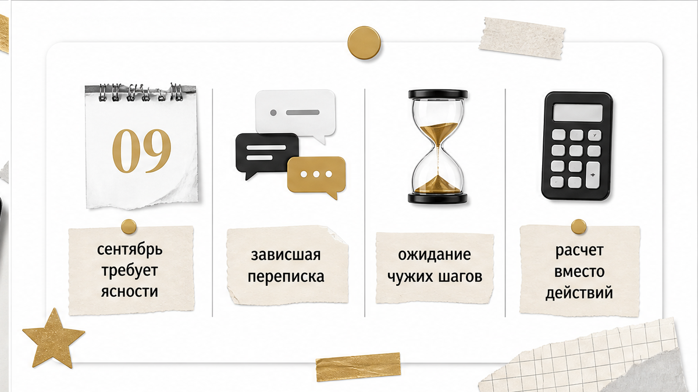
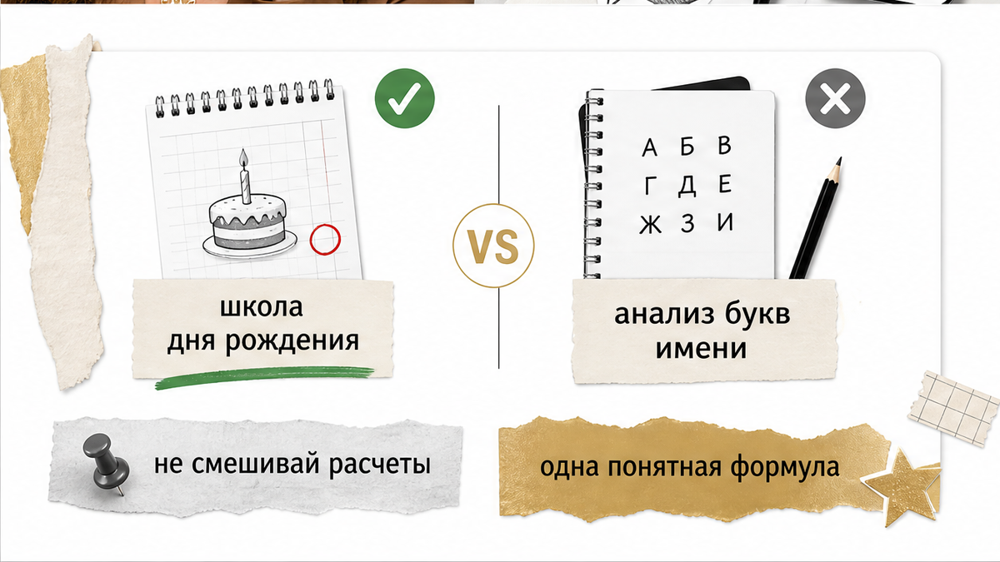
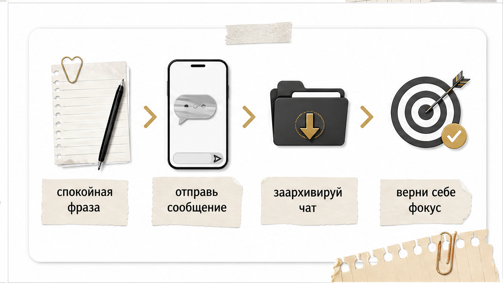

Экран телефона светится в темноте на старой переписке, где последнее сообщение застыло без ответа и точки. В соседней вкладке заметок аккуратно сохранены его цифры: день рождения, вычисленная пятёрка или семёрка, а рядом заботливо приписано: «душа» или «характер». Лента новостей с конца августа настойчиво твердит одно и то же: наступивший сентябрь требует закрыть все подвешенные дела и расчистить пространство вокруг себя.
Возникает обманчивое ощущение: если ещё раз пересчитать его данные, логика затянувшейся паузы наконец сложится сама, а нужное сообщение для завершения диалога появится на экране без твоего участия. Но цифра в заметках не умеет нажимать кнопки. Она способна описать привычный темперамент человека и его манеру закрываться, но точку в зависшем разговоре всегда ставит прямое действие.
Когда старый чат продолжает оттягивать твоё внимание, а бесконечные подсчёты лишь усиливают тревогу, важно отделить психологический портрет человека от реального положения дел между вами. Карты помогают трезво оценить расстановку сил и снять лишнее напряжение.
Сформулируй для себя три точных вопроса:
Чтобы быстро прояснить ситуацию и увидеть текущий баланс, открой 3 бесплатных расклада в боте MAX или запусти 3 бесплатных расклада в Telegram-боте. Экспресс-триплет или классический крест покажут скрытую динамику за пару минут.
Если тебе нужен детальный анализ мотивов партнёра, причин его затягивания и перспектив отношений, используй расклад «Суть – Тень – Вектор» в приложении ВКонтакте. Ты также можешь открыть приложение в MAX или запустить приложение в Telegram, где доступен глубокий аудиоразбор связок карт и скрытого подтекста ситуации.

В начале осени нумерологические обзоры синхронно заговорили о необходимости избавиться от незавершённых контактов. В прогнозе на Гороскопах Mail (27 августа 2026 года, Екатерина Савичева) сентябрь 2026 года рассчитывается через календарную сумму: 0+9+2+0+2+6 = 19, что сводится к единице (1+9 = 10 → 1+0 = 1). Единица символизирует чистый старт, но Савичева делает ключевой акцент: войти в новый этап можно только после того, как закрыты все зависшие хвосты. Отношения в этот период проходят проверку на искренность, требуя открытых слов вместо привычного статус-кво.
Параллельно тематические каналы, включая Дзен-канал «Код отношений: нумерология + психология» (публикация от 3 сентября 2026 года), рассматривают сентябрь как девятый месяц в универсальном первом году (2026 = 2+0+2+6 = 10 → 1). Девятка здесь выступает символом финальной ревизии и эмоциональной гигиены: новое пространство не откроется, пока не отпущено исчерпавшее себя общение. Авторы советуют не прятаться за удобными паузами, а провести спокойный разговор сейчас, чтобы закрыть истощающий контакт.
Сентябрьская единица или девятка задают лишь внешний календарный ритм. Этот фон подталкивает к наведению порядка, но сам по себе он не напишет прощальный текст и не отправит его адресату.

Путаница вокруг личных чисел возникает из-за того, что разные традиции используют схожие термины для абсолютно разных формул. В практике сформировались два независимых подхода, которые нельзя механически соединять в один расчёт.
Первый подход — школа дня рождения, принятая в русскоязычных медиа (Гороскопы Mail, материалы Яны Пустоваловой от 15 августа 2026 года, портал NUR.KZ от 24 марта 2022 года). В ней учитывается исключительно число дня рождения без месяца и года. Числа с 1 по 9 остаются без изменений, а двузначные складываются: 24-е число даёт 2+4 = 6, а 17-е — 1+7 = 8. Mail называет полученную цифру «числом души» и связывает её с внутренними потребностями человека в паре. При этом нумеролог Татьяна Козлова (Москва 24, 19 февраля 2026 года) по той же формуле дня определяет «число характера», отвечающее за темперамент и форму проявления чувств. Сами эксперты подчёркивают: опираться только на день рождения в живом диалоге бессмысленно.
Второй подход — западная школа анализа имени (энциклопедия Astrollo, проект Нумеролог.ру, открытые алгоритмы GitHub numerologyCalculator LanderTome). Здесь внутреннее и внешнее строго разделены по буквам полного имени при рождении:
Попытка соединить число дня рождения с гласными из имени создаёт искусственную конструкцию. Главное ограничение едино для обеих систем: ни глубинная суть по гласным, ни темперамент по дню рождения не объясняют, почему человек прямо сейчас не пишет в чат.
Нумеролог Лиана Кочетова (Лента.ру, 8 мая 2026 года) отмечает, что числовые расчёты работают с настоящим моментом и служат инструментом самопознания, а не фатальным прогнозом будущего. Перекладывать ответственность за поступки на формулы не имеет смысла: каждый человек принимает решения самостоятельно. Аналитики проекта Taliora (1 мая 2026 года) также подчёркивают, что нумерология является системой символического описания времени и потенциала, а не неизбежной судьбой.
В школе Анны Спицыной напоминают: дата рождения — это карта возможностей, а не пожизненный ярлык. Важно не то, какая цифра досталась человеку, а то, как именно он делает выборы каждый день. Как отмечают психологические издания (Psychologies), попытка сглаживать углы и поддерживать иллюзию «мягкого расставания» без прямых слов только затягивает внутренний кризис. Точку в диалоге ставит понятная человеческая речь, а не вычисленная в блокноте сумма.

Чтобы выйти из замкнутого круга и вернуть себе спокойствие, пройди четыре простых шага:
Ожидание ответа в замершем диалоге забирает колоссальное количество энергии. Когда ты раз за разом возвращаешься к старой переписке, ты остаёшься привязанной к чужим сомнениям и откладываешь собственные события. Облегчение наступает в тот момент, когда ты перестаёшь искать скрытые знаки в чужих паузах и начинаешь опираться на факты.
Если ты чувствуешь, что ситуация запуталась, а внутренний диалог не утихает, взгляни на происходящее через символы Таро. В приложении доступен специализированный расклад «Суть – Тень – Вектор» через приложение ВКонтакте, который подсвечивает истинную суть ситуации, теневые блоки партнёра и вектор развития событий. Ты также можешь запустить приложение в сервисе MAX или использовать приложение в Telegram, где доступен подробный аудиоразбор скрытых мотивов и практические ориентиры для твоего спокойствия.
Для быстрой проверки текущего момента без лишних сложностей используй простое решение: открой 3 бесплатных расклада в боте MAX или запусти расклады в Telegram-боте. Сделай шаг к ясности уже сейчас.